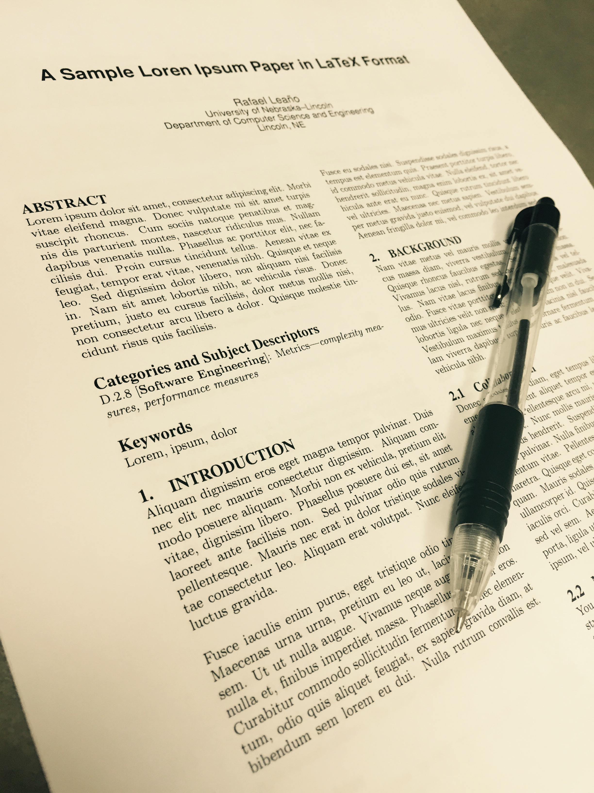

Publications
Labeling relevant skills in tasks: can the crowd help?
Rafael Leano, Zhendong Wang, Anita Sarma
in Visual Languages/Human-Centric Computing (VL/HCC) (2016)
Recommending Task Context
Rafael Leano, Bakhtiar Kasi, Anita Sarma
in Workshop on Context for Software Development (2014)
Dynamic Software Product Lines for Context-Aware Web Services
Carlos Parra, Rafael Leano (as Rafael Leaño), Xavier Blanc, Laurence Duchien, Nicolas Pessemier, Chantal Taconet, Zakia Kazi-Aoul
in Enabling Context-Aware Web Services: Methods, Architectures, and Technologies (2010)
Définition d'une chaîne de production sensible au contexte pour les plates-formes ubiquitaires
Laurence Duchien, Rafael Leano (as Rafael Leaño), Carlos Parra, Nicolas Pessemier
English Title: Defining a context-aware software product line for ubiquitous platforms
Technical Report
(2009) [in french]
Using change intentions to guide evolution and versioning in Model Driven Development
Rafael Leano (as Rafael Leaño), Rubby Casallas
in Workshop on Models and Evolution, Joint MoDSE-MCCM (2009)
Changeset MDA - Aplicación de MDA (Model-Driven Architecture) para el desarrollo de aplicaciones
Juan Carlos Alvarez, Nicolas Hoyos, Rafael Leano (as Rafael Leaño)
English Title: Changeset MDA - Applying MDA for development of applications
Bachelor Thesis
(2007) [in spanish]
